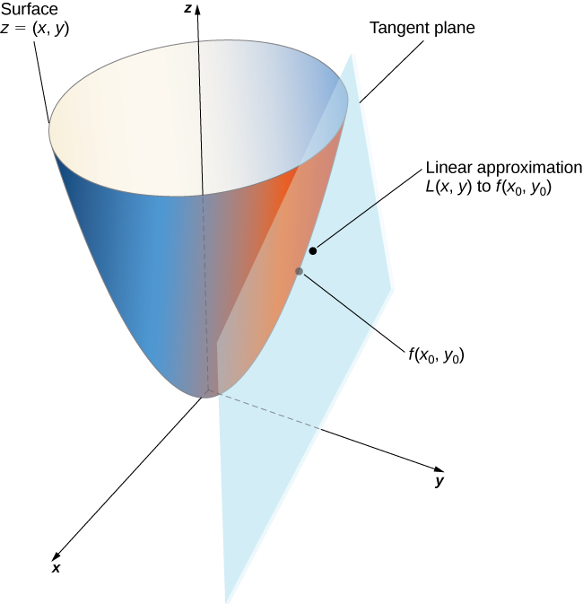
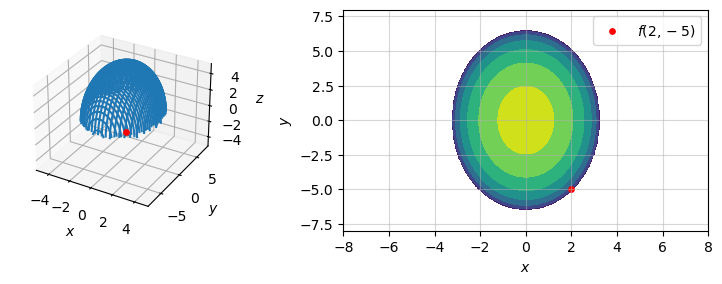
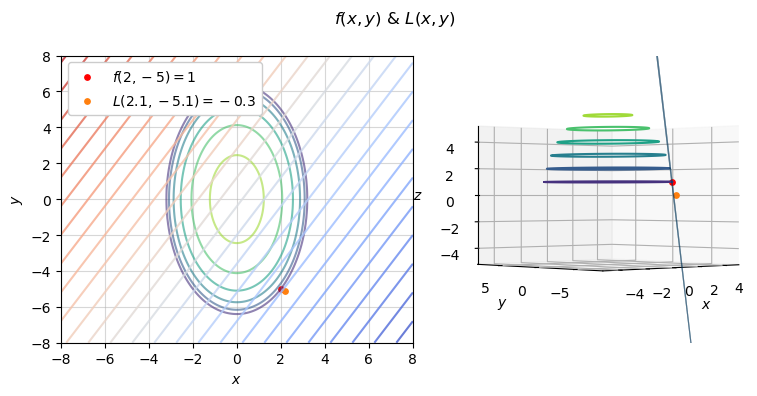

Code
import matplotlib.pyplot as plt
from mpl_toolkits.mplot3d import axes3d
import pandas as pd
import numpy as np
import warnings
warnings.filterwarnings("ignore")Peter Amerkhanian
March 2, 2024
The following is a calculus problem that I think provides a good overview of linear approximation, a method for approximating a general function using a linear function. This is a simple application of taylor series approximation, and is used for optics, oscillation, and electric resistivity problems (“Linear Approximation” 2023). The following image from (Strang and Herman 2016, chap. 4.4) provides some good intuition of what this approximation looks like:

Use a tangent plane to approximate the value of the following function at the point \((2.1, -5.1)\).
\[f(x,y) = \sqrt{42-4x^2-y^2}\]
Here’s some code setup for the question:
We can’t just plug in and compute this output because the point (2.1, -5.1) is outside of the domain of this function – thus \(f(2.1, -5.1)\) does not exist.
\[f(2.1, -5.1) \approx \sqrt{-1.65} = DNE\]
To approximate this quantity, we find a nearby point where the function is defined, and construct a tangent plane to extrapolate our quantity of interest. For a nearby point, I select \(P_0 = (x_0=2, y_0=-5)\), where the function still produces a real number output:
\[f(x_0, y_0) = f(2, -5) =\sqrt{1} = 1\]
fig = plt.figure(figsize=(8, 3))
ax1 = plt.subplot(122)
ax2 = plt.subplot(121, projection='3d')
# Countour plot
ax1.contourf(X, Y, Z)
ax1.scatter(2, -5, color='red', s=15, label=r"$f(2, -5)$")
ax1.grid(alpha=.5)
ax1.legend()
style_plot(ax1)
# 3d surface
ax2.plot_wireframe(X, Y, Z)
style_plot(ax2, z=True)
ax2.set_box_aspect(None, zoom=0.9)
ax2.set_xlim(-5, 5)
ax2.set_ylim(-8, 8)
ax2.set_zlim(-5, 5)
ax2.scatter(2, -5, f(2, -5), color='red', s=15)
fig.tight_layout()
We then derive a linear approximation of \(f\) at this point using the following equation:
\[ \begin{align} L(x, y) = f\left( {{x_0},{y_0}} \right) + {f_x}\left( {{x_0},{y_0}} \right)\left( {x - {x_0}} \right) + {f_y}\left( {{x_0},{y_0}} \right)\left( {y - {y_0}} \right) \end{align} \tag{1}\]
This is really just the first order taylor polynomial of a given function, which, in \(\mathbb{R}^3\), represents a tangent plane approximation:
[…] This equation […] represents the tangent plane to the surface defined by \(z=f(x,y)\) at the point \((x_0,y_0)\). The idea behind using a linear approximation is that, if there is a point \((x_0,_0)\) at which the precise value of \(f(x,y)\) is known, then for vales of \((x,y)\) reasonably close to \((x_0,y_0)\), the linear approximation (i.e., tangent plane) yields a value that is also reasonably close to the exact value of \(f(x,y)\).
Recall that \(f_x\) and \(f_y\) refer to components of the gradient vector, \(\nabla f\). We calculate that gradient as follows: \[
\begin{align*}
\nabla f &= \left< f_x, f_y \right> \\
\nabla f &= \left< \frac{df}{dx}, \frac{df}{dy} \right> \\
\nabla f &= \left< \frac{-4x}{\sqrt{42-4x^2-y^2}}, \frac{-y}{\sqrt{42-4x^2-y^2}} \right>
\end{align*}
\] Now we can plug in our point, \(P_0\):
\[
\begin{align*}
\nabla f(P_0) &= \left< {f_x}\left( {{x_0},{y_0}} \right), {f_y}\left( {{x_0},{y_0}} \right) \right> \\
\nabla f(P_0) &= \left< \frac{-4(2)}{1}, \frac{-(-5)}{1} \right> = \left< -8, 5 \right>
\end{align*}
\] We now have all elements of the tangent plane/linear approximation, Equation 1, and we can simply plug-in and compute: \[
\begin{align*}
L(x,y) &= f(2, -5) + -8 \left( {x - 2} \right) + 5\left( y - (-5) \right) \\
L(x,y) &= 1 + -8x + 16 + 5y + 25 \\
L(x,y) &= -8x + 5y + 42
\end{align*}
\]
fig = plt.figure(figsize=(8, 4))
ax1 = plt.subplot(121,)
ax2 = plt.subplot(122, projection='3d')
# Countour plot
ax1.contour(X, Y, Z, label=r"$f(x)$", alpha=.6)
ax1.contour(X, Y, L(X, Y), levels= 25, alpha=.8, cmap="coolwarm", label=r"$L(x)$")
ax1.scatter(2, -5, s=15, color='red', label=r"$f(2, -5) = 1$")
ax1.scatter(2.2, -5.1, s=15, color='tab:orange', label=f"$L(2.1, -5.1) = {round(L(2.1, -5.1), 2)}$")
ax1.grid(alpha=.5)
ax1.legend(loc="upper left", framealpha=1)
style_plot(ax1)
# ax1.view_init(-130, -90, 0)
# 3d surface
Z = np.ma.masked_where(Z <= 0, Z)
X = np.ma.masked_where(Z <= 0, X)
Y = np.ma.masked_where(Z <= 0, Y)
ax2.contour3D(X, Y, Z, corner_mask=True)
ax2.plot_surface(X, Y, L(X, Y), alpha=1)
# ax2.contour3D(X, Y, Z, 20, cmap='gray')
style_plot(ax2, z=True)
ax2.set_xlim(-5, 5)
ax2.set_ylim(-8, 8)
ax2.set_zlim(-5, 5)
ax2.scatter(2, -5, f(2, -5), color='red', s=15)
ax2.scatter(2.2, -5.1, s=15, color='tab:orange', label=f"$L(2.1, -5.1) = {round(L(2.1, -5.1), 2)}$")
ax2.view_init(0, -133, 0)
fig.suptitle(r"$f(x, y)$ & $L(x, y)$")
fig.tight_layout()
With that linear approximation established, we can now estimate our original quantity of interest, \(f(2.1, -5.1)\). \[f(2.1, -5.1) \approx L(2.1, -5.1) = -8(2.1) + 5(-5.1) + 42 \approx \boxed{-0.3} \]